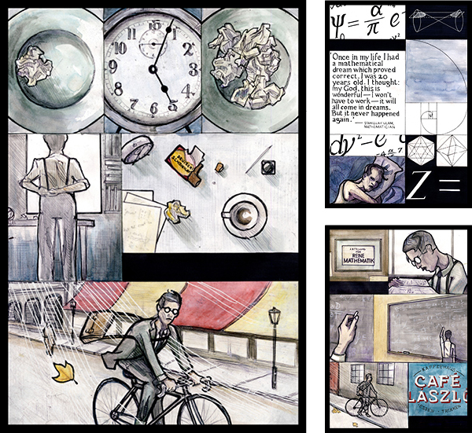

|

|
The Number Problem
The Number Problem is a 10 page illustrated story created as a webcomic. I wanted to develop a story whose themes would dictate a specific visual approach, and with this in mind I created a simple narrative about a mathematician trying to solve a difficult problem. I used this as an opportunity to explore careful, geometrical images and compositions which suggest logic and precision. I avoided drawing images driven by movement and energy, and I focused instead on restrained, static forms. I was keen to experiment with a scheme of muted colours to suit the tone and setting of the story, and I tried to develop distinct ways of suggestion the slow passage of time over the course of the story.
Full piece
|